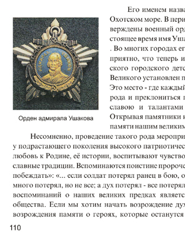

Вёрстка страниц с иллюстрациями
Вёрстка страниц с иллюстрациями в CorelDRAW выполняется не только легко и удобно, но и не требует предварительной подготовки изображений в сторонних программах (растровых редакторах), так как все необходимые параметры изображений можно не только проконтролировать, но и легко и быстро изменить.
Здесь, пожалуй, стоит отметить, что специальные программы для вёрстки InDesign и QuarkXpress не предоставляют возможности пересэмплирования изображений и, кроме того, для вставки изображения в них создаётся специальный т.н. графический блок, который удобств не прибавляет, а иногда и вовсе усложняет работу (скорее всего своим появлением он обязан стереотипу мышления разработчиков: тексту – текстовый блок; изображению – графический блок). В CorelDRAW изображение вставляется на страницу непосредственно, без дополнительного графического блока
Наиболее типичная ошибка при вёрстке страниц с иллюстрациями – это когда вставляют изображения необъятных размеров и масштабируют, просто сжимая за уголок, что приводит к избыточному разрешению изображений, что в свою очередь влечёт увеличение времени вывода на печать (в лучшем случае), а то и вовсе к зависанию процессора. Мне, например, приносили макеты, где вставленные изображения имели разрешение больше 1000 dpi.
Самые большие проблемы создаются любителями «верстать» в Word-е. Широкое распространение и доступность программы, и вместе с тем отсутствие достаточных знаний, приводят к тому, что у дилетантов создаётся иллюзия лёгкости процесса макетирования, а то и вовсе некоторые даже спорят: «Я-то напечатал! А Вы не можете.», забывая при этом, что напечатали они на струйном принтере, у которого обработка информации при печати идёт по-другому и изображение может печататься частями, буквально даже несколькими проходами каретки с печатающей головкой.
Коварство в макетах, свёрстанных в Word-е, могут таить изображения, повёрнутые на некоторый угол. При печати они могут потерять нормальное разрешение.
Кроме того ещё одно коварство Word-овских макетов в том, что при раскрытии их файлов на других компьютерах происходит автоматическая подмена отсутствующих шрифтов, программа не предупреждает о произведённой подмене. Автор забывает предупредить об использовании оригинальных шрифтов, а печатнику до них нет дела.
Несмотря на то, что Word – достаточно мощная программа, всё-таки в первую очередь – это программа для офисных документов и не следует думать, что она годится на все случаи.
Все упомянутые программы поддерживают технологию Drag & Drop (тащу и бросаю), что делает вставку изображения элементарным делом. Выделяете нужный файл хоть в Проводнике или каком-либо просмотрщике изображений и перетаскиваете через панель задач. Но вся прелесть работы в CorelDRAW в том, что, Вы можете смело перетаскивать любые изображения, нисколько не задумываясь о их разрешении. Вставив изображение, смело масштабируйте его до нужных размеров, затем щёлкните по изображению правой кнопкой мыши и, в открывшемся меню выбирете Свойства. В открывшемся окне Свойства объекта выбирете закладку Растр и узнавайте характеристики изображения. Если изображение имеет избыточное разрешение (более 300 dpi), то пересэмплируйте его. Для этого, выделив изображение, выбирете на Главной панели Растровые изображения а, в открывшемся меню – Преобразовать в растровое изображение… Установите нужное разрешение. Следует заметить, что увеличение разрешения цветных изображений более 300 dpi не всегда ведёт к улучшению качества при печати на лазерных принтерах. Дело в том, что в лазерной печати для разрешения изображения применяется понятие линиатура, имеющее тот же смысл, с той лишь разницей,что оно относится к мельчайшему элементу изображения – пикселу, который создаётся так называемыми растровыми розетками – множеством более мелких точек тонера (краски), к которым как раз и относится понятие разрешение лазерного принтера. Разрешение лазерного принтера должно быть почти на порядок больше, чем линиатура или разрешение изображения, и различие это должно быть тем больше, чем больше цветовых оттенков мы желаем получить.
В случаях с изображениями с плохим (низким) разрешением, если требуется их увеличить, следует отдавать себе отчёт, что их пересэмплирование в сторону увеличения разрешения, то есть с добавлением точек, лишь до некоторой степени улучшает качество изображения.
Также следует понимать, что очень высокое разрешение требуется для мелких контрастных объектов (например текст), поэтому часто офисные принтеры, предназначенные как раз для печати текста, имеют разрешение 600 dpi. Для изображений с полутоновыми переходами приемлемо менее высокое разрешение.
Удобство вёрстки в CorelDRAW ещё и в том,что при необходимости скорректировать цвета изображения, это можно легко сделать в Лаборатории по корректировке растровых изображений (Главная панель – Растровые изображения).
Что касается обтекания изображения текстом, то хочу поделиться приёмом, которым пользуюсь давно, и который, как мне кажется, даже более удобен и гибок. Собственно режимы обтекания я даже не использую вовсе, а создаю два или три связанных текстовых блока, которые окружают изображение и, изменяя их размеры,подбираю более приемлемый вариант расположения текста. Большая гибкость здесь проявляется в том, что текст совсем не обязательно «облепляет» картинку, а занимает нужное место. Это особенно важно для таких страниц, где, например, заканчивается глава или статья, и Вы не хотите чтобы внизу этой страницы начиналась другая, и располагаете текст более свободно. При пользовании таким способом надо обращать внимание на точное позиционирование одного блока относительно другого по высоте, чтобы смежный между блоками межстрочный интервал был таким же как и в блоках. Эту доводку лучше делать уже после того, как Вы определитесь с размерами блоков. Несмотря на кажущуюся трудность, на самом деле всё это не занимает особого труда и времени.

На этом рисунке показан пример, когда применение обычного приёма обтекание текстом не подходит, так как под изображением надо поместить подрисуночную подпись. Иллюстрации с подрисуночной подписью – случай довольно частый.

На этом рисунке демонстрируется пример, когда требуется получить фигурную линию обтекания.
Накройте текстовый блок фигурой, край которой имеет требуемую линию обтекания. Щёлкните по ней правой кнопкой мыши и задайте Обтекание текстом. Фигура может быть как без цвета, так и цветная, а абрис без цвета. Фигура, обтекаемая текстом будет являться как бы подложкой для изображения.

Текст можно также ограничить с двух или более сторон.
На этом рисунке текст ограничен двумя фигурами. На следующем рисунке видно, как текст заполняет намеченное пространство при растягивании верхней фигуры в виде сектора в четверть круга.


Solowejka, то что ты пишешь это все хорошо, но когда затрагиваешь
другие программы, не зная о их преимуществах, это плохо!
Думаю больше нет смысла что-то говорить или доказывать!
Да, вот представьте, не знал. Незнание – не порок. Процесс познания он такой вот перманентный. Вот теперь с помощью Black-а разобрались. Хуже, когда человек ни к чему не стремится. Насчёт чьей-то некомпетентности ничего не говорил.Такого слова как лошня даже не знаю.
А вообще-то, дорогие мои, если вы хотите иметь живой сайт,то надо делать так, чтобы людям было интересно в нём, чтобы люди не стеснялись спрашивать, не боясь, что их заклеймят позором за незнание, чтобы смелее делились своим опытом. Вы сравните: сколько пользователей, сколько посетителей, которые тихой сапой полазают по сайту и уходят. Интересный сайт всегда будет привлекать новых пользователей. Сайт будет жить.
И всё-таки, вопрос компетентным пользователям: можно ли в InDesign пересэмплировать вставленные изображения (изменить разрешение)?
Я к сайту ни какого отношения, кроме как нахождения здесь в качестве пользователя, не имею )))) А про тихонь, да люди по природе своей почти все такие, ходят тока молча качают и уходят. Не все же такие активные как ты. :D
К тому же критиковать сайт и его авторов может каждый, а вот сделать свой, да что бы на него ещё заходил народ, вот тут постараться надо, а самое главное ведь всё на чистом энтузиазме, на который не покушаешь. И в принципе результат то на лицо - сайт достаточно молодой, на сколько я знаю, а в сутки тут уже бывает около 700-800 уникальных посетителей, если верить счётчикам внизу страниц.
А про эту ветку и твою тему... ну что ж, ты высказался, и мы высказались. Вот и отлично )))) Просто поговорка такая есть "В чужом глазу соринку видно, а в своём и бревно не заметишь"... как то так кажется. Так что делай выводы, ведь не зря все высказались против твоей точки зрения.
По поводу индиза... там это не нужно по одной простой причине: всё линками. А когда это выводится в ПДФ, то в этот момент и происходит обрезка и ресемплинг.
Бесплатный плагин LB Place and Scale фирмы Rorohiko Ltd, который перехватывает импортируемые фотографии и сразу их масштабирует к нужному эффективному разрешению, например в 300 dpi. Требуемое эффективное разрешение предварительно задается в настройках плагина
Black,
Des425,
Спасибо.
А я в чём-то и соглашусь с Solowejka!!
Недавно пришёл заказчик - с мало-мало нестандартным, скажем так, мышлением... Принёс макет (бумажный) буклета, так там мало того, что формат страниц разный, так ещё куча иллюстраций и... самое главное его требование: "Чтоб текстовые блоки были приварены сваркой, а фотки прикручены на болты!"
Чесал я репу-чесал, думал - в чём верстать - думаю - ну на каждую фотку крутить по 4 болта в фотошопе - как-то лень мне... Потом думаю - ну а сварной шов подгонять под каждый текстовый блок и рисовать это в том-же фотошопе - это жесть - а вдруг - перевёрстка?!..
Добавлено (01.06.2010, 18:04)
---------------------------------------------
Сорить болтами в Индизе - тоже мне как-то не улыбалось, тем-более мудрить там со сварными швами вокруг текстовых блоков - это, думаю мазохизм...
А с другой стороны - в Кореле кучу фоток верстать - тяжёлый файл, медленная запись....
Но я выбрал такое решение - верстать в кореле, а картинки линковать. А сварных швов разной длины с прозрачными краями /чтоб стыковать/, болтов и планок для них наготовил в фотошопе и закинул в корел так - без линка.
РЕЗУЛЬТАТ: Верстать было не напряжно, т.к. всё продумал. Абсолютно всё редактировалось на месте, т.е в Кореле (ну фотки, естесственно подготовил не в нём). Сверстал 24 полосы достаточно быстро, даже удивился. А от "сварки" текста и "закручивания гаек" в картинки даже получил моральное удовлетворение))! Ну и заказчик был доволен - дизайн вроде как брутальный и неординарный (сам бы я, что греха таить - не стал бы так заморачиваться....
Так что я думаю - абсолютно нет ничего плохого в том, что сверстать можно и в Кореле. Буклеты страниц до 30-40 - я верстаю иногда в нём - и нисколько не жалею.
kuterma2, вот именно буклет, а не многостраничное издание с иллюстрациями!
Дела не в том, где можно, а где нельзя, главное чтоб было проще, удобней и без подводных камней!
Des425, я как-то помнится, когда Корела ещё не знал, но знал Пэйджмэйкер верстал в нём бланки. Тогда мне так "было проще". И ничего - верстал-же, хоть и не так быстро, как сейчас могу в родном уже Кореле это сделать. Так что каждому своё. спорить-то тут и не о чем.
P.S. Кстати к нам в типографию приносят ежемесячно газету, свёрстанную в Кореле. Да свёрстано всё криво, но таки свёрстано!). И доказывать тем, кто газету принёс про радость Кварка/Индизайна - нет ни малейшего желания.
kuterma2, я бы это вообще в люстре сделал с использованием тамошних рамок, которым можно задать угловой и линейный элементы, а так же с помощью символов, которые поддерживают растягивание элементов только в специально заданном месте, оставив, например края, без изменений. :)
Но это так, на вскидку :)
Страницы